卷飯鎮區公所為我直轄市政府之派出機關，公所本體設於卷飯鎮區好笑路一段5號，一、二樓駐有本所各科各室，地下室存有M60A3乙輛……
本站由NorwegianIron所管理。可透過右方的「聯絡資訊」拜訪各社群平台。
於上方導覽列之「市政資訊」內可探索本區各項施政報告(即各項雜七雜八之企劃)。至「保存庫」可觀看本區所收集之圖畫及歌謠等資產(即我個人作品集還有隨機文章與歌詞存放地)。

卷飯鎮區公所
Pax Ridiculus

2026/08/08 - 挑燈夜戰下首頁終於完工，但沒有手機版網頁就先這樣吧。
2026/08/07 - Ory被發現是佬；聯合國教科文組織：真的。
2026/08/04 - 本站定於Github上發布並開始編寫。